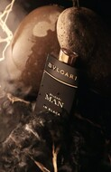

Perfumes
-

- 
Tom Ford
Tobacco Vanille de Tom Ford é um perfume Âmbar Especiado Compartilhável. Tobacco Vanille foi lançada em 2007. O perfumista que assina esta fragrância é Olivier Gillotin. As notas de topo são: Folha de Tabaco e Notas Especiadas. As notas de coração são: Baunilha, Cacau, Fava Tonka e Flor de Tabaco. As notas de fundo são: Frutas Secas e Notas Amadeiradas.